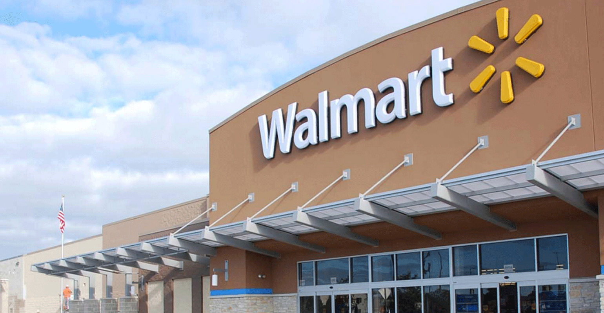
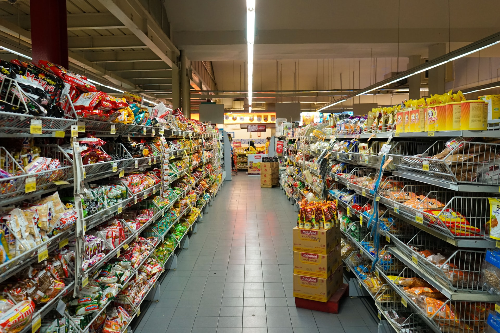

About Us

Walmart, Inc. engages in retail and wholesale business. The Company offers an assortment of merchandise and services at everyday low prices. It operates through the following business segments: Walmart U.S., Walmart International,
and Sam's Club. The Walmart U.S. segment operates as a merchandiser of consumer products, operating under the Walmart, Wal-Mart, and Walmart Neighborhood Market brands, as well as walmart.com and other eCommerce brands. The Walmart
International segment manages supercenters, supermarkets, hypermarkets, warehouse clubs, and cash and carry outside of the United States. The Sam's Club segment comprises membership-only warehouse clubs and samsclubs.com. The company
was founded by Samuel Moore Walton and James Lawrence Walton in 1945 and is headquartered in Bentonville, AR
Our Stores

Walmart Supercenters, branded simply as "Walmart", are hypermarkets with sizes varying from 69,000 to 260,000 square feet (6,400 to 24,200 square meters), but averaging about 178,000 square feet (16,500 square meters).These stock
general merchandise and a full-service supermarket, including meat and poultry, baked goods, delicatessen, frozen foods, dairy products, garden produce, and fresh seafood. Many Walmart Supercenters also have a garden center, pet shop,
pharmacy, Tire & Lube Express, optical center, one-hour photo processing lab, portrait studio, and numerous alcove shops, such as cellular phone stores, hair and nail salons, video rental stores, local bank branches (such as Woodforest
National Bank branches in newer locations), and fast food outlets. Many Walmart Supercenters have featured McDonald's restaurants, but in 2007, Walmart announced it would stop opening McDonald's restaurants at most of their newer stores.
Most locations that opened up after the announcement had Subway as their restaurants, and some McDonald's inside the stores were replaced with Subways. In some Canadian locations, Tim Hortons were opened. Recently, in several Supercenters,
like the Tallahassee, Florida and the Palm Desert, California locations, Walmart added Burger King to their locations, and the location in Glen Burnie, Maryland, due to its past as a hypermarket called Leedmark, which operated from
May 1991 to January 1994, boasts an Auntie Anne's and an Italian restaurant. Some locations also have fuel stations which sell gasoline distributed by Murphy USA (which spun off from Murphy Oil in 2013), Sunoco, Inc. ("Optima"), the
Tesoro Corporation ("Mirastar"), USA Gasoline, and even now Walmart-branded gas stations. The first Supercenter opened in Washington, Missouri, in 1988. A similar concept, Hypermart USA, had opened a year earlier in Garland, Texas.
All Hypermart USA stores were later closed or converted into Supercenters. As of January 31, 2022, there were 3,573 Walmart Supercenters in 49 of the 50 U.S. states, the District of Columbia, and Puerto Rico.Hawaii is the only state
to not have a Supercenter location. The largest Supercenter in the world, covering 260,000 square feet (24,000 square meters) on two floors, is located in Crossgates Commons in Albany, New York. A typical supercenter sells approximately
120,000 items, compared to the 35 million products sold in Walmart's online store. The "Supercenter" name has since been phased out, with these stores now simply referred to as "Walmart", since the company introduced the new Walmart
logo in 2008. However, the branding is still used in Walmart's Canadian stores (spelled as "Supercentre" in Canadian English).
Our Items
Our item such as, Clothing, Shoes & Accessories Women Women's Plus Men Girls Boys Baby Shoes Jewelry & Watches Bags & Accessories Savings Books Shop all books Kobo eReaders eBooks Children's books Textbooks Teen & young adult books
Magazines Biographics & memoirs Literature & fiction Comics & graphic novels Arts & entertainment Cookbooks, food, & wine Movies & TV Shows Shop all movies & TV shows 4K Ultra HD Movies Blu-ray Movies DVD Movies 4K Ultra HD TV Shows
Blu-ray TV Shows DVD TV Shows Music & Vinyl Shop all music & vinyl Turntables Musical instruments Rap & hip-hop Rock Pop Country Classical Video Games Shop all video games Xbox PlayStation Nintendo Video game accessories Virtual reality
Arcade Collectibles Arts, Crafts, Sewing & Party Supplies Shop All Arts Crafts & Sewing Sewing Machines & Accessories Die Cutting Fabric Arts & Crafts Furniture and Storage Craft Supplies Art Supplies Knitting & Crochet Arts & Crafts
for Kids Beading & Jewelry Making Fabric & Apparel Crafting Artificial Plants and Flowers Party Supplies Gift Wrap Wedding Shop